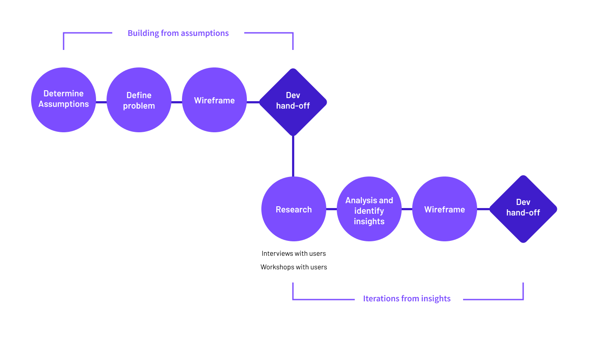
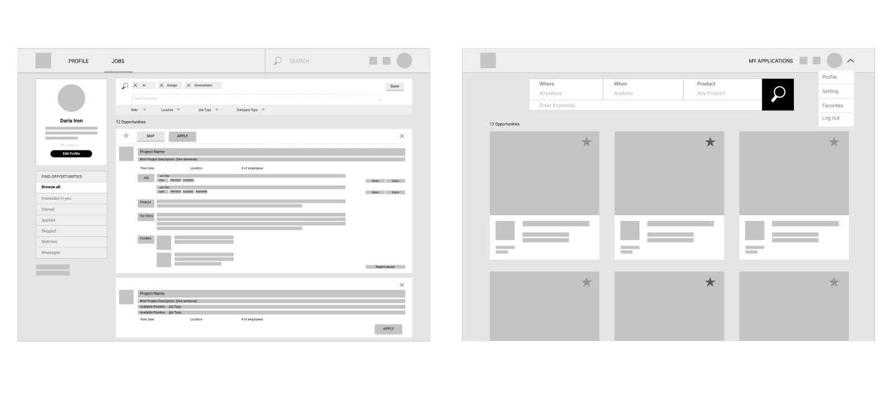
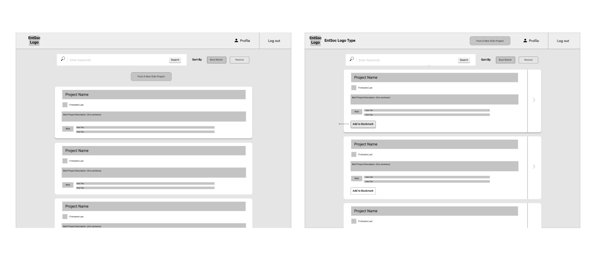
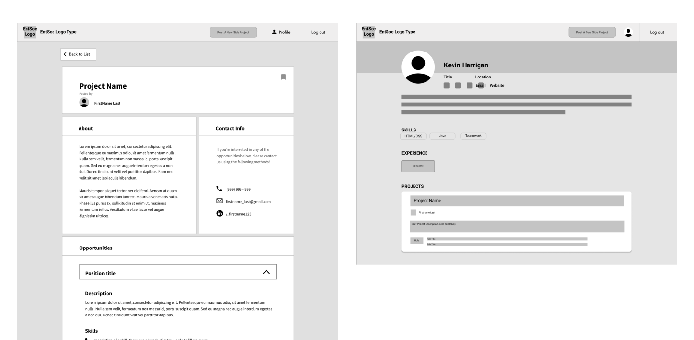

Helios - Side Project Platform
Role
Project Lead & User Experience Designer
Duration
Jan 2018 to present
Brief
Helios is a platform that connects entrepreneurial students and individuals together to build side projects and startup businesses. Its aim is to aggregate talented and passionate people to create a network where everyone shares the same drive to improve their skills and gain experience.
Timelines - Working with time and dev constraints
We started the first iteration of the project building from our assumptions. In order to keep our devs utilized and meet our deadlines, the design team made initial designs which would be iterated on afterwards.
Our Assumptions
Assumption 1
People who would use our platform are already looking to start or join a side project, mostly students.
Assumption 2
With our product, people and projects are aggregated on our platform. The expected user behaviour is that they would look through the list of available projects and roles.
Outcome
We prioritized displaying projects as a result. Here were some initial explorations done by my teammate, Emma.
And we made more iterations to make the experience simpler.
Assumption 3
Profiles are less prioritized in the information architecture than project detail pages. Users are expected to click into projects and contact the poster from that page. To get to the profile, users would have to click their profile icons, a much smaller, non-obvious action button.
Outcome
We designed the project detail page and profile page to reflect this assumption. We de-prioritized any information about team and team members from the detail page, and featured projects on the profile pages. The wireframes below were explorations from Emma and Yifei.
Understanding the user - finally conducting research!
We interviewed 4 individuals, who ranged from students looking for side projects, to startup owners looking for more team members. We asked questions to better understand their frustrations and goals when it comes to